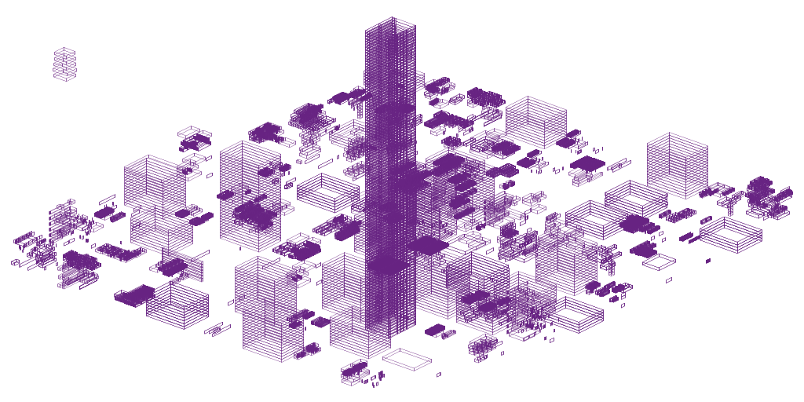
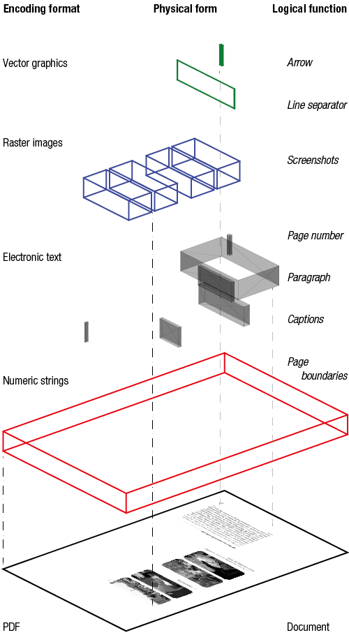
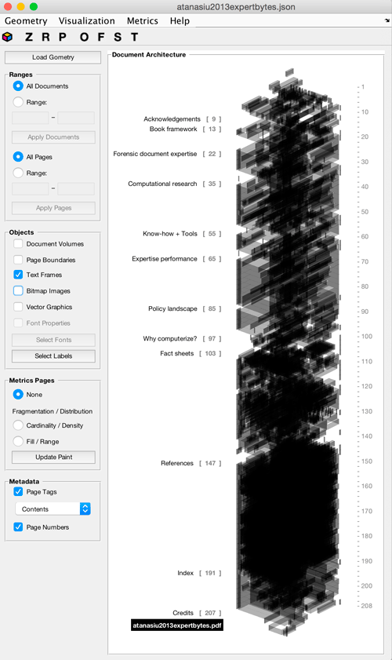
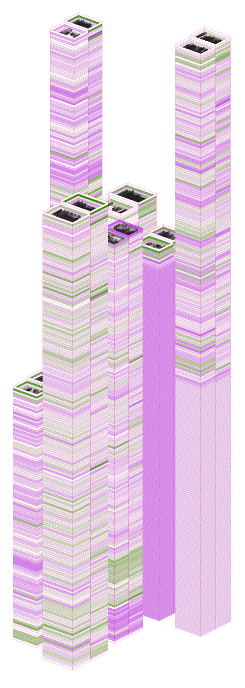

Document Towers
Vlad Atanasiu
atanasiu@alum.mit.edu
http://alum.mit.edu/www/atanasiu/
2021.01.06
Document Towers is a software to visualize the three-dimensional geometry of paginated documents, that is the location and shape of the physical pages, text paragraphs, bitmap images, vector graphics, and, indeed, any information that can be spatially located.
Document Towers uses an architectural paradigm as cognitive model to represent document structures: objects-as-rooms, pages-as-floors, documents-as-towers, and libraries-as-cities.
The software obtains this information natively from Adobe InDesign IDML and ALTO files. A generic file format allows to import geometry data extracted by other software from further formats, such as PDF, Word, or even movie frames. The software is written in Matlab (R2018b).
Contents
Highlights Insights example Installation Demonstration files Workflow Concept Interface Visualization Functionalities Interaction Menu Metrics Data format Multimodality Art
Highlights
- A generic paradigm for visualizing the structure of paginated documents
- Facilitates exploration and serendipitous insights in digital document libraries
- Allows document overview at a glance, without complex algorithmic analysis
- Represents documents as buildings and cities as a facilitating cognitive model
- Fit for document design, navigation, classification, and digitization quality control
Insights example
The above figure illustrates how document structures presented by the Document Towers yield insights of practical importance. What is seen as Document Towers are eighty-nine PDF documents in a directory ordered by filename. The blue slabs represent the location and extent of raster images in the digital documents.
Misclassification: While the collection was supposed to contain only articles, the presence of a high-rising Tower reveals a monograph among them. This misclassification would most likely have gone unnoticed if not for its serendipitous discovery due to visualization.
Quality: The regular Towers are scanned documents, where each page is a single raster image, while the fragmented Towers represent native electronic documents, in which images cover only a portion of pages (if present at all). For a library wishing to offer its readers searchable digital documents, the implication is that scanned documents must be identified and the text and logical structure extracted, which is time-consuming, costly, and yields imperfect search quality. Visualization offers a quick and lightweight solution to anticipate document quality.
Forensics: The small Tower in the upper left corner, which draws the eye due to its outlying location, is not an individual document, but rather represents images located outside the visible frame of the PDF documents. Could it conceal a hidden message?
Installation
- In the Matlab window, click the APPS tab, then "Install App", and select the application file "Document_Towers_v[...].mlappinstall" from the "src" folder.
- Click the "Document Towers" icon in the apps bar to run the application.
- Read the documentation provided in the "docs/help" folder, by opening the file "index.html" in a web browser.
- Use the sample document files provided in the "docs/demo" folder to experiment with various document format and visualization option types.
Note: The folder "src/code" contains the same source code files as in the "mlapp" file. You can see this by changing the extension from "mlapp" to "zip" and unzipping the file.
Demonstration files
A number of demonstration files are found in the 'demo' folder and are described in the readme.txt file of that folder.
Workflow
- Supposing you work in InDesign on a document and you wish to visualize it, then select the menu File > Save As... > Format: InDesign CS4 or later (IDML), save the document to the IDML format, and copy the file to an empty folder.
- In the Document Towers menu select Geometry > Extract and select the directory containing the IDML file(s) you wish to visualize.
- Document Towers will generate in the same directory a file with the same name, but extension 'json', containing the document geometry.
- To visualize the extracted geometry push the Load Geometry button in the upper left corner of the application window, then the directory containing the extracted geometry files.
- Interact with the visualization through the graphical user interface by selecting which information is showed and manipulating the visualization in 3D.
- You can save the visualization in various formats from the menu, selecting Visualization > Save As... (SVG for high quality printing, PNG for web display, FIG for reuse in Matlab). (The files are saved in the same directory as the one from which they were read. If there is already a file with the same name, it will be overwritten (therefore modify their name as soon as saved, for example describing the point of view: "filename - top.png").)
Concept
The visualization concept of the DOcument Towrs is to extrude the rectangular bounding boxed around document objects into thr-dimensional slabs, and stack the objects page by page into a "tower". The figure below illustrates this principle.
Interface
The application interface consists of the visualization panel, the functionalities panel, the interaction toolbar, the menu, and gestural and keyboard interactions.
Visualization
The right-side of the application window is used to display the 3D representation of document structures. The top floor of the Towers represents the first page in a document. Enlarge the Document Towers window to full display size to gain a better view of details when displaying multiple documents.
Functionalities
Load Geometry: Loads document geometry files in the Towers JSON format (see section Data format for specifications). You can select a folder and all the JSON files in it will be read. The data will be displayed in the Visualization panel. This button has the same function as the menu Geometry > Visualize.
Ranges: Specify whether to display all loaded documents and pages, or ranges thereof. Click the Apply button effect the change.
Objects: Specifies the objects to display as 3D wire frames: the document volume, page boundaries, text frames, bitmap images, vector graphics, and fonts.
Click Select Fonts to specify the name, size, color, and transparency of fonts. If you wish to specify a single parameter of these classes, then you need to also select all the options of the the other classes.
Some objects in the input files may be labeled – to select which, if any, of them to display, click the Select Labels button.
Metrics Pages: It is possible to perform some measurements on the document objects and to paint the 3D exterior of the objects with colors encoding the resulting values. The metrics can be understood as informing about the fragmentation of documents, and be conceived as characteristics of a statistical distribution.
The Cardinality metric is informative about the density of objects on a page or spread, and is defined as the number of objects within the page or spread boundaries. The Fill metric informs about the page of spread area covered by objects, i.e. the statistical range of the object distribution.
Page Boundaries must be checked for the metrics to become visible. Metrics are not available for font objects. Click Update Paint if you modified the objects to be displayed.
Metadata: Page Tags allows the display of textual tags of pages, if they are present in the input file, such as section titles. Page Numbers toggles page numbers next to the corner of the document visualization.
Interaction
The toolbar below the menu, as well as a few keyboard shortcuts, allows the following interactions with the document visualization. Note that keyboard interaction is possible only if the zoom, rotate, and pan tools are disabled (black tool label on gray background).
z zoom in and out of the visualization by clicking or dragging r rotate the visualization in 3D by dragging it p pan the visualization by dragging it o oblique view displays the document using a orthographic projection, with 40° azimuth and 25° elevation f front view of the document Tower s side view t top view h hide the functions panel (this option is useful when saving the figure) o open geometry file (same a the Load Geometry button) 0 show the coordinates axis double-click resets the visualization to its initial view parameters, when the toolbutton zoom, rotate, or pan ar active (white tool label on gray background)
Menu
Geometry > Extract: Selects InDesign IDML or ALTO files and extracts geometry information, which is saved to a JSON-formatted file readable by Document Towers. All IDML and ALTO files in the selected folder are processed. The output files are in the same folder as the input files. The same function is provided by the Load Geometry button on the functionalities panel.
Geometry > Visualize: Loads document geometry files for visualization from a selected folder. These were either generated by Document Towers from InDesign IDML and ALTO files, or by third-party software in the format readable by Document Towers.
Visualization > Save As: Save the visualization in one of the following formats > PNG (fixed-size bitmap image format appropriate for line art and web display), SVG (scalable vector graphics format appropriate for web media), PDF and EPS (scalable vector graphics formats appropriate for print media), and FIG (Matlab format).
Visualization > Preferences: Text Transparency sets the transparency of text objects (alpha channel), with values ranging from 0 (transparent) to 1 (opaque). Floor Hight sets the height of objects, expressed in pixels. Document Spacing sets the distance between documents, expressed in pixels, when multiple documents are displayed concomitantly.
Metrics > Statistics: Provides counts of the different object types in the document.
Metrics > Preferences > Metrics Values: Specifies whether the metrics in the Metrics panel refer to a single page/spread/pasteboard (absolute value), or to the difference of such metrics for two consecutive pages/spreads/pasteboards (relative value).
Metrics > Preferences > Metrics Boundary: Specifies whether the metrics should be carried out on pages, spreads (one or more adjacent pages, such as a double page or a folded map in a book), or pasteboards (an area wider that the page and the spread, but not visible when documents are displayed in a document viewer, such as Acrobat).
Metrics > Preferences > Metrics Cardinality: Specifies if the colormap representing metrics is linear or logarithmic.
Metrics > Preferences > Colormap Scheme: Selects the color scheme used by the colormap.
Metrics > Preferences > Colormap Range: Specify whether the color with the lowest value corresponds to the lowest measured value of the selected metric (Min–Max option), or to zero (Zero–One option; in this case the highest value is scale to one).
Metrics
The software provides the following statistics: the number of represented objects of a given label type, the number of objects per page (cardinality), and the area of a page covered by the objects (fill). Ongoing research aims at expanding the measurement of information in document structures, using descriptors such as the visual and typological diversity of objects, along with their configuration (e.g., symmetrical or asymmetrical layout). (The last two metrics are experimental, and not included in the software.)
The measured values are colorcoded and represented on the exterior of Document Towers, as illustrated below.

The document analyzed here is the same as displayed above in the Interface section. The measurement of cardinality shows that two pages of the book contain a large number of objects. Their inspection reveals that one of them is a table, which is an object type with, indeed, many parts. — The fill metric points to regular gaps the book, where a smaller page surface is covered by objects. These correspond to portions between sections, where there is less typographical material. — Diversity highlights the high variation of line length in the second part of the book, where the references are situated. — Configuration suggests that the layout is less homogeneous and more asymmetrical at specific locations within the book. Typically, these correspond to chapter starts.
Data format
Below is a sample from a document geometry file used by Document Towers.
jsondata ({
"geometry":
[
"",
[
[0, 0, 0.0,0.0, 595.0,0.0, 595.0, 841.0,0.0, 841.0],
[1, 0, 36.0,35.0002, 545.9153,35.0002, 545.9153,117.0002, 36.0,117.0002],
...
[3, 0, 36.0,67.5001, 497.292,67.5001, 497.292,67.5001, 36.0,67.5001],
...
[4, 0, 36.0,35.0002, 61.39,35.0002, 61.39,45.0002, 36.0,45.0002, "MinionPro-It", 10.0, 0,0,0,1.0],
[4, 63.6596,35.0002, 540.8996,35.0002, 540.8996,45.0002, 63.6596,45.0002, "MinionPro-Regular", 10.0, 0,0,0,1.0],
...
[4, 0, 268.1433,675.2199, 568.1433,675.2199, 568.1433,762.5199, 268.1433,762.5199, "JesusLovesYou", 300.0, 0,168,236,1.0]
],
[
[0, 0, 0.0,0.0, 595.0,0.0, 595.0,841.0, 0.0,841.0],
[1, 0, 268.1433,675.2199, 568.1433,675.2199, 568.1433,762.5199, 268.1433,762.5199],
[4, 0, 268.1433,675.2199, 568.1433,675.2199, 568.1433,762.5199, 268.1433,762.5199, "JesusLovesYou", 300.0, 0,168,236,1.0]
],
[
[0, 0, 0.0,0.0,441.0,0.0,441.0,666.0,0.0,666.0],
[1, 0, 375.0879,627.0, 383.4719,627.0, 383.4719,635.0, 375.0879,635.0],
...
[2, 0, 57.2031,56.4652, 218.7609,56.4652, 218.7609,124.63719, 57.2031,124.63719],
[2, 0, 57.2031,134.2296, 218.7609,134.2296, 218.7609,202.4016, 57.2031,202.4016],
...
[3, 0, 376.0709,603.5749, 383.4709,603.5749, 383.4709,607.28687, 376.0709,607.28687]
]
],
"tags":
[
["Contents",[
["Chapter 1",1],
["Chapter 2",2]]],
["Big Illustrations",[
["Fig 1",1],
["Fig 2",3]]]
],
"metadata":
{
"filename":"sample fonts.pdf",
"url":"file:///sample fonts.pdf",
"volume":[595.0, 841.0, 3.0],
"counts":[3, 11, 4, 8, 46],
"objects":[
[0,"Pages"],
[1,"Text"],
[2,"Images"],
[3,"Graphics"],
[4,"Fonts"]],
"labels":[[0,"Unlabeled"]],
"legend":"object type; bounding box coordinates: n * (x, y); font name; font size; font fill color: rgba"
}
})
The arrays in the geometry JSON object represent pages, within which are regrouped individual objects of the document structure of given pages.
The first value of an array is a scalar key that defines the type of the document object, as referenced in the objects array of the metadata JSON object.
After the second value (a label key explained at the end of this section), the next eight integers are x–y coordinate pairs of the document object, in clockwise order, from the top-left corner of the document object.
If the document object is a font, then it is possible to specify after the coordinates, as in the above example, the font name as a string, the font size, the font color in RGB format as positive integers from 0 to 255, and the transparency (valued from 0 to 1).
The tags JSON object defines classes of tags attached with the respective tag strings and referenced pages to individual Document Towers page objects. These tags can be displayed along the document structure.
In the metadata JSON object, the member filename contains the filename of the document from which the JSON geometry file was derived, while url provides the path to the file. If the file is a PDF, then a hyperlink is created between it and the visualization: clicking one of the page numbers next to the visualization the respective (logical) page of the PDF document will be displayed in a web browser.
Volume specifies the width, height, and number of pages of the displayed document. Counts specify the total number of objects in the document by the types and order of the objects entity. Legend is a short in-file explanation of the metadata fields.
Document objects can be labeled and the display filtered according to selected labels. Label keys are positive integers inserted after the first value (the key to the object type) of a JSON array, and explicited in the labels entity of the metadata JSON object, as in the following example from an ALTO file:
jsondata ({
"geometry":
[
"",
[
[0, 0, 0,0,2349.5,0,2349.5,3159.13,0,3159.13],
[1, 4, 697,246,1701,246,1701,337,697,337],
...
[2, 5, 277,200,2126,200,2126,391,277,391],
...
]
],
"metadata":
{
...
"labels":[
[0,"Unlabeled"],
[1,"Advertisement"],
[2,"Author"],
[3,"Caption"],
[4,"Headline"],
[5,"Illustration"],
[6,"PageNumber"],
[7,"Publishing_Stmt"],
[8,"RunningTitle"],
[9,"Textblock"]],
...
}
})
Multimodality
On-screen display of Document Towers are only one modality to represent document structures. Analog instantiations let them be useful for a variety of applications, as illustrated in the following pictures.
The book in the picture was designed in InDesign and the structure of text frames is represented as Document Towers in interactive mode on screen and printed on paper, with the intention to function as a bookmark and a navigation aid similar to a table of contents.
The possibilities opened by more compact versions of the Towers were investigated in an independent project form the Document Towers. The page layout irregularity was measured and represented as a barcode-like histogram. The beginnings of chapters are visibly standing out. The information is accessible as a sticker affixed on the book spine and laser-engraved on a wood tablet. The former allows an insight into the book without opening it, while the latter acts as a book navigation and browsing device for people with low vision.
Art
Towers of Ishtar is an example of an aesthetically appealing set of Document Towers. The colors encode measurements of the page layout regularity. The striated pattern is reminiscent of the glazed walls of ancient Babylon.
